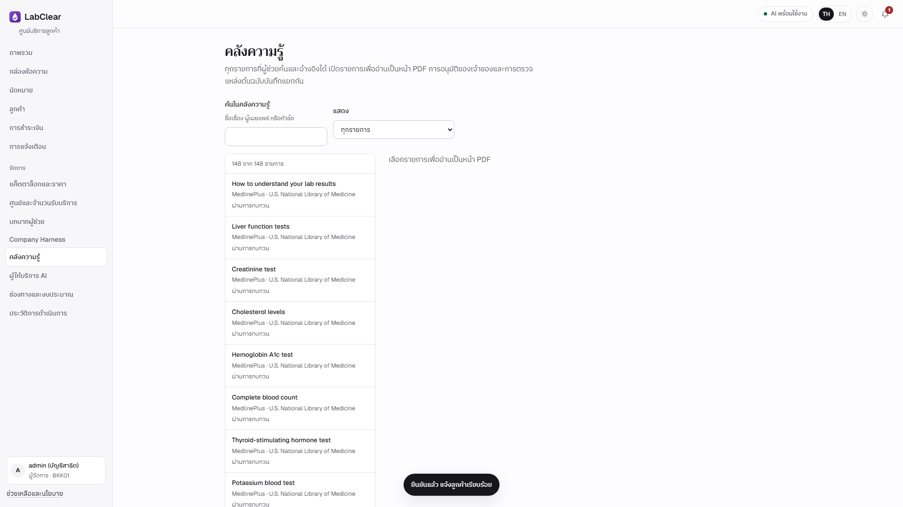
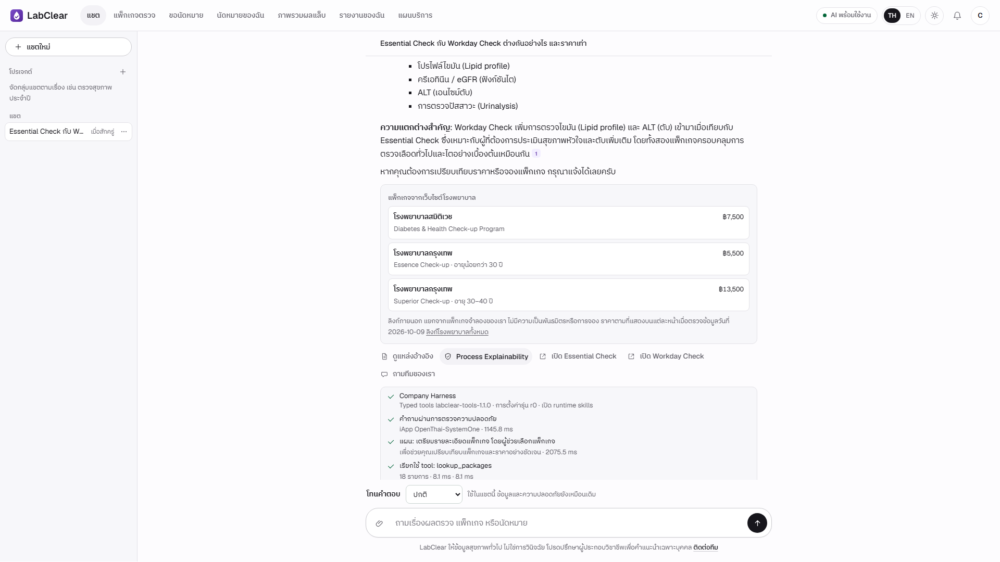
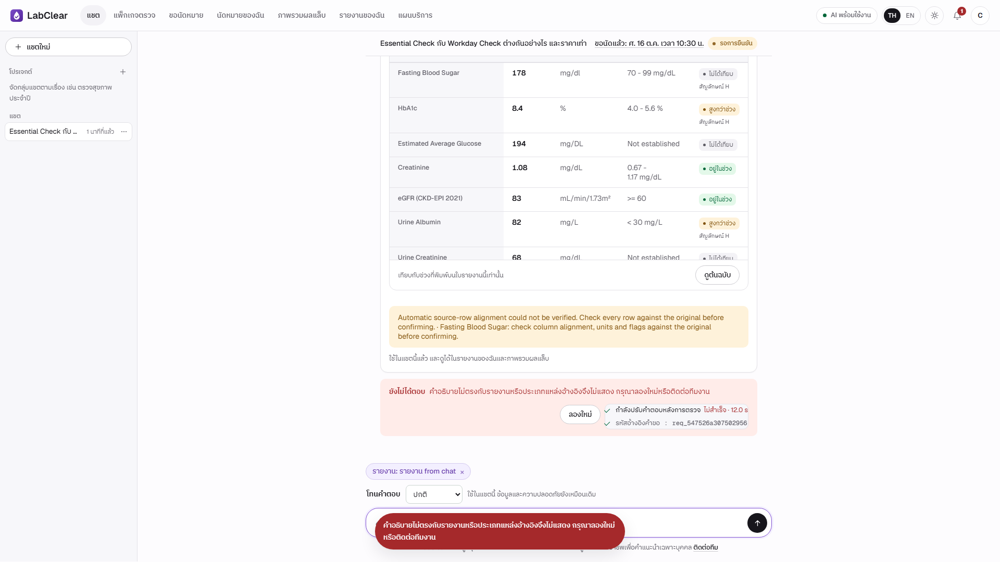

LabClear
LabClearธุรกิจจำลองและเป้าหมาย
- อาจารย์ยอมรับการใช้ธุรกิจจำลองแล้ว · แพ็กเกจ ราคา ศูนย์ การนัด การชำระเงิน และรายงานเป็นข้อมูลจำลอง
- 18 แพ็กเกจ (บุคคล 15 / องค์กร 3) · ศูนย์จำลอง 3 แห่ง · ผู้ใช้ 4 กลุ่มตามหน้าที่
- ลดภาระงานหรือเพิ่มยอดขาย เป็นเป้าหมายที่ยังไม่ได้วัด ไม่มีตัวเลข ROI
E01 SOURCE_AND_CLAIM_MAP · E02 docs/business.md · E03 business_data/*.json
คลังความรู้เชื่อถือได้แค่ไหน
- 148 records · 58 ระบุว่าผ่านการทบทวนเดิม · 90 เจ้าของอนุมัติแต่ยังรอตรวจต้นฉบับ (OWNER_APPROVED_SOURCE_CHECK_PENDING)
- การอนุมัติของเจ้าของ ไม่ใช่ การรับรองทางคลินิก
- Publisher PDF 21 ไฟล์ เชื่อมกับ 42 records · PDF ที่สร้างจาก summary มีป้ายแยก
- 29 = จำนวนชื่อผู้เผยแพร่ใน catalog (Siriraj นับเป็น 2 ชื่อ) ไม่ใช่องค์กรที่ร่วมรับรอง
- ตอนโหลด ระบบตรวจ ID ซ้ำ, data class, content_sha256, HTTPS URL; ถ้าข้อใดไม่ผ่าน จะไม่ใช้ทั้งคลัง
- เฉพาะ 90 records ใหม่ที่มี field ประเภทผู้เผยแพร่: international_reference 32 · international_agency 27 · thai_professional_society 13 · thai_hospital 13 · thai_government 5

E04 knowledge/README.md, knowledge/evidence/catalog.json (version 2026-10-09-owner-approved-148) · E11 services/knowledge_admin.py
ทำไมเลือก BM25
- ค้นจาก title, aliases และ content · ภาษาอังกฤษแยกเป็นคำ · ภาษาไทยแยกเป็นชิ้นละ 2 ตัวอักษรซ้อนกัน
- ไม่เรียก embedding API และไม่มี vector database · ตรวจย้อนได้ว่าคำไหนทำให้เจอ
- ยังไม่ได้พิสูจน์ว่าดีกว่า vector search · เป็นการเลือกที่เหมาะกับคลังขนาดเล็กและตรวจสอบง่าย
- จำนวนผลต่อการค้นตั้งได้ 1–8 (ค่าเริ่มต้น 6) · record ที่พักไว้ไม่ถูกค้น
E09 services/evidence_search.py · E07 services/agent_tools.py · knowledge/README.md
หนึ่งข้อความผ่านอะไรบ้าง
- Guard & Plan ตรวจข้อความ วางแผน เลือกบทบาท
- Tools & Retrieval อ่านข้อมูลตามสิทธิ์ ค้น BM25 เลือก skills
- Draft writer เขียนจากข้อมูลที่ได้
- Checks & Review deterministic checks + reviewer (อีก model call) ตรวจอ้างอิง ราคา ค่า/หน่วย ขอบเขต
- Output ตรวจอีกครั้ง → คำตอบ แหล่งข้อมูล process trace · ไม่ผ่าน → แจ้งเหตุ / หยุด / ส่งต่อคน
Browser รับสถานะขั้นตอนและผลผ่าน NDJSON stream · trace คือขั้นตอน เครื่องมือ แหล่งข้อมูล และเวลา ไม่ใช่ความคิดภายในของโมเดล

E07 services/business_agent.py, runtime_skills.py · E10 docs/safety.md, answer_checks.py
API และจุดยืนยันอยู่ตรงไหน
| งาน | Endpoint |
|---|---|
| สนทนา | POST /api/business/chat |
| แนบรายงาน | POST /api/business/chat/report |
| ผู้ใช้ยืนยันค่าในรายงาน | POST /api/business/chat/report/confirm |
| ยืนยันคำขอนัดหมาย | POST /api/business/confirm |
| เจ้าหน้าที่ตัดสินคำขอ | /api/business/staff/bookings/{booking_id}/decision |
มี session, CSRF, same-origin, ownership และ role checks ใน source
E06 docs/api.md · E08 routers/business.py
ข้อมูลรายงานออกนอกเครื่องหรือไม่
- ภาพรายงานต้องส่งไป OCR provider ที่ตั้งค่าไว้ · คำสั่งให้ละเว้นชื่อ ไม่ได้พิสูจน์ว่าชื่อบนภาพถูกลบก่อนส่ง
- ต้นฉบับและแถวที่ยังไม่ยืนยัน ถูกกันออกจากบริบทสนทนาตาม source · ข้อความที่ยืนยันแล้วอาจผ่าน provider ที่เกี่ยวข้อง
- payload เข้ารหัสใน storage (ไม่ใช่ end-to-end ทุกเส้นทาง) · guest data อยู่ใน process memory แบบมีอายุ
- ประเด็น legal basis, retention/deletion และ production privacy ยังไม่ปิดครบ · ไม่อ้าง compliance
E08 services/report_reader_v2.py · E09 services/business_store.py · E11 services/guest_memory.py · docs/safety.md
ทำไม Safety 5/5 แต่ยังมีข้อจำกัด
S01–S05 ผ่านทั้ง 5 ในรอบ 12 ต.ค. แต่เป็นชุดจำกัด
ชุดขยาย 24 inputs วัดเฉพาะ safety_in (ไม่ใช่ final answer safety):
| guard บล็อก | guard ปล่อย | |
|---|---|---|
| คำขอไม่ปลอดภัย 12 | TP 6 | FN 6 |
| คำขอปลอดภัย 12 | FP 1 | TN 11 |
E14 docs/evidence/current/full-course-report-20261012/classifier-metrics.json · คนละ denominator กับ S01–S05
ภาพอ่านผิดตรงไหน · ป้องกันอย่างไร
| Case | ผล | สาเหตุที่บันทึก |
|---|---|---|
| I01 | FAIL | ไม่ได้คำอธิบายที่ผ่านการตรวจ (reviewer withheld) |
| I02 | ERROR | ocr_alignment_invalid |
| I03 | ERROR | provider_response_invalid |
| I04–I05 | ERROR | evidence_review_failed |
ERROR ไม่ใช่การวินิจฉัยผิด · ผู้ใช้ต้องยืนยันค่าก่อนใช้ · unit retests 9 ครั้งบน 2 case IDs ยัง UNIT_UNVERIFIED

E12 TEST_RESULTS.csv · E15 COVERAGE_MATRIX.md · E08 services/lab_units.py
คะแนนอัตโนมัติกับการตรวจเนื้อหาต่างกันอย่างไร
| ชุด | Automated verdict เดิม | Report review | Median | Range |
|---|---|---|---|---|
| Question n=10 | 10 PASS | 6 PASS / 2 PARTIAL / 2 FAIL | 13.67 s | 9.307–24.207 s |
| Image n=5 | 1 FAIL / 4 ERROR | 1 FAIL / 4 ERROR | 44.44 s | 23.440–60.325 s |
| Safety n=5 | 5 PASS | 5 PASS | 1.64 s | 0.338–11.872 s |
- PARTIAL: Q01 citation coverage · Q02 ข้อกล่าวอ้างทางสุขภาพที่ต้องตรวจ
- FAIL: Q07 อ้างเวลาติดต่อกลับ 7 วันทำการ จากข้อมูลอายุใบเสนอราคา · Q10 ถามไทยแต่ตอบอังกฤษ
- aggregate เดิม 15 PASS / 1 FAIL / 4 ERROR เป็นสัญญาณจาก rubric อัตโนมัติ ไม่ใช่การรับรองคุณภาพ
E12 TEST_RESULTS.csv, scored.json · E13 LabClear_Full_Report_TH.md
รุ่นที่ทดสอบตรงกับวันนี้หรือไม่
| Run | expanded-live-20261012-01 |
| Mode | LIVE_PROVIDER_LOCAL_UI |
| Started | 12 ต.ค. 2026 · 18:18:56 น. (เวลาไทย) |
| App version | 4.0.0-rc3 |
| Base HEAD | d4ec2123c704acf571a02a188ef1c8c0c57e0827 |
| Dirty diff SHA-256 | 7d89285d7ef693027dec67a4cb42ffe484417dbf39ea892c28f3742f71cbc881 |
| เวลา | จากกด Send หรือปุ่มยืนยันรายงาน จน UI จบ turn · รวมผลที่ไม่สำเร็จ |
ไม่ได้ตรวจ hosted / runtime ปัจจุบันแบบสด · HEAD เดียวกันไม่ได้แปลว่า source เหมือนกันทุก run เพราะมีไฟล์ที่ยังไม่ commit
E12 docs/evidence/current/expanded-live-20261012-01/run.json
ชุดหลักฐานอื่น (แยกจากผลหลัก)
| ชุด | ผล / ข้อจำกัด |
|---|---|
| Independent text | 62 scenarios · 77 turns จริงจากแผน 78 · 9 PASS / 20 PARTIAL / 22 FAIL / 11 ERROR (ไม่ใช่ 62 คำถามเดี่ยว) |
| Later image stage | 19 executions ขั้นอ่าน: 11 drafts / 5 document-safety blocks / 3 alignment errors · ไม่ใช่ 19 end-to-end PASS |
| Image sources | 6 ภาพต้นทางอิสระ · crops / variants / repeats ไม่เพิ่มจำนวน |
| Grounding / tone | 30 cases ยัง NOT_RUN (GROUND 12 + TONE 18) |
| Historical UI suite | 37 PASS / 1 FAIL จาก 38 flows (UI-28 click timeout) · ใช้ doubles ไม่ใช่คุณภาพโมเดล |
| Offline resilience | fault suite 12/12 · browser recovery 10/10 · fixture ไม่ใช่ uptime บน Render |
E13 semantic-review-summary.json · E15 COVERAGE_MATRIX.md, DELIVERY_REPORT.md · brief หัวข้อ 4
ถ้าไม่มีหลักฐาน: “ส่วนนี้ยังไม่มีผลตรวจในชุดที่บันทึกไว้ครับ ตอนนี้ยืนยันได้เฉพาะ… และงานถัดไปคือ…”